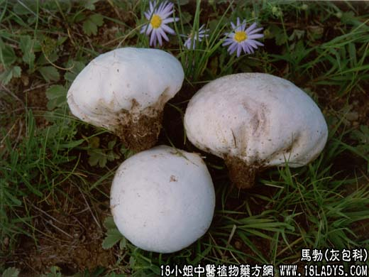

【中药概述】
马勃为灰包科真菌脱皮马勃的子实体。辛、平。归肺经。
1．清热利咽：用于外感风热或肺热咽痛、失音、咳嗽等证，有疏散风热和清肺利咽之效，如（< 疫喉浅论方>清咽消毒饮）。
2．收敛止血：用于创伤出血、冻疮及下肢溃疡，有止血作用，能止血和促进疮面愈合。取本品粉外敷。
【药效鉴别】
马勃为治热毒上乘咽喉肿痛之要药。常配诃子肉，元参，桔梗，甘草，细辛（少量），研末炼蜜为丸，含化。
【临证应用】
马勃、马牙硝各等份研末，炼蜜为丸，每服10g，治咽喉炎、扁桃体炎、咳嗽声哑。
【药理作用】
具有止血，抗菌（金黄色葡萄球菌、溶血链球菌），抗真菌等作用。
【化学成分】
含马勃素、尿素、麦角甾醇、亮氨酸、酪氨酸，并含大量磷酸钠。
【用量用法】
9——20g，水煎服，或入丸、散剂。